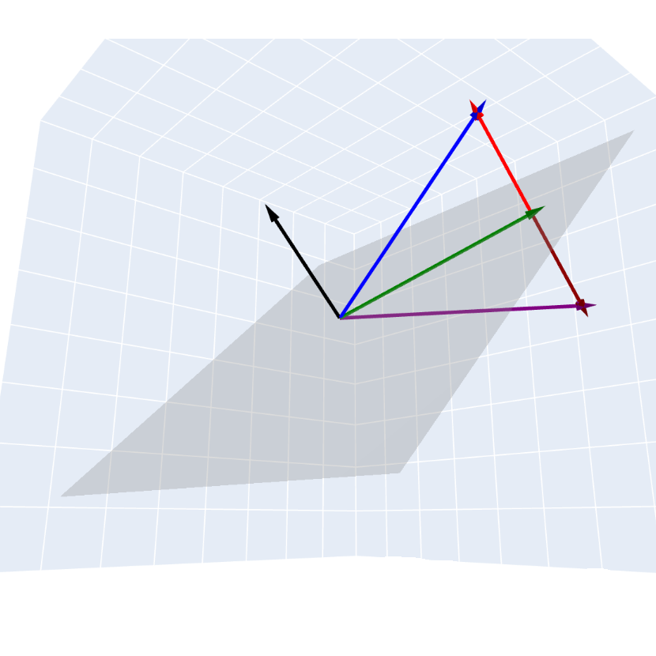

Geometric Algebra is the study of the Geometric and Physical applications of Clifford Algebras. In fact, the term Geometric Algebra was originally suggested by William Clifford, the founder of Clifford Algebra. [1.2.3] For the remainder of this paper, the terms Geometric Algebra and Clifford Algebra will be used interchangeably. Additionally, we will only be talking about finite dimensional Geometric Algebras, as infinite dimensional Geometric Algebras lack a few nice properties, such as having a well defined duality and nice pseudovectors. These properties will be further explained later.
Geometric Algebra is a powerful mathematical tool for intuitively modelling many useful systems and tools, especially in physics. Because of its simplicity and penchant for intuition, Geometric Algebra is popular among Physicists, however I believe that the theory behind it is just as beautiful.
We will begin by discussing what useful features someone might look for in an algebra. Then, we will define a Geometric Algebra, and show some of its basic operations. We will generate a basis for a Geometric Algebra. Next, we will discuss reflections in Geometric Algebra and how to compute them. Finally, we will explore Rotors, a powerfully simple tool for rotations in any Geometric Algebra. We will also overview some other interesting topics of Geometric Algebra for further research.
If you were building a new Algebra from scratch, what would you want to include? There are many useful properties for an algebra to have. Being a ring with identity is useful. Being compatible with many transcendental functions is also a very nice bonus. Being easy to compute would be good. Geometric Algebra has all of these properties, but the main three qualities that I would like to highlight are:
An Algebra forming a vector space is one of the most useful properties an Algebra can have. When the dimension of this vector space is finite, it allows us to form a finite basis for any element in the algebra. Furthermore, this allows us to define orthogonality in this algebra. In fact, the concept of orthogonality is crucial to the construction of these Geometric Algebras.
Subsubsection1.1.2Algebra Between Elements of Different Dimensions
Can you multiply a matrix and a vector? Sometimes, if they are of the right dimension. Can you subtract a vector from a matrix? Under most vector spaces, that is nonsense. In Geometric Algebra, you can take two objects of different dimensions (in this case, grade, which we will discuss later on) and multiply them together to get something meaningful.
Plenty of Algebras have an intuitive Geometric meaning, and Geometric Algebra is no exception. To rotate a complex number by 90 degrees, one can simply multiply it by the imaginary number \(i\text{.}\) Geometric Algebra has something similar, though arguably more powerful, called a rotor. If we would like to rotate any multivector \(\mathbf{v}\) by any number of degrees along any axis, we can simply take the sandwhich product of it and the corresponding rotor \(R\text{.}\) That is, the rotated multivector \(\mathbf{v}'\) can be represented as \(\mathbf{v}'=R\mathbf{v}R^{\dagger}\text{.}\) The idea of a Rotor acting on a vector via the sandwhich product is the primary topic that we will be building to.
Let us now build our first Geometric Algebra! The notation of a Geometric Algebra is \(Cl_{n,m,k}\text{,}\) such that there are \(n\) basis vectors that square to \(1\text{,}\)\(m\) basis vectors that square to \(-1\text{,}\) and \(k\) basis vectors that square to \(0\text{.}\) We will discuss what squaring means in this context shortly.
We will focus on \(\clthree\text{,}\) as it is not as trivial as \(Cl_{2,0,0}\text{,}\) and is a good representation of the 3-dimensional world. Being a representation of the 3-dimensional world, we will begin by defining \(i,j,k\in\clthree\) as being the orthogonal basis vectors of this Geometric Algebra. You can think of \(i\) as analagous to the first basis vector of \(\R^n\text{,}\) with \(j,k\) being the second and third, respectively. If I wanted to represent the vector \(v=\begin{bmatrix}3\amp-2\amp1\end{bmatrix}^T\) in \(\clthree\text{,}\) we would write \(v\) as \(v=3i-2j+k\text{.}\) But what does it mean for two basis vectors to be orthogonal in a Geometric Algebra? For that, we need to discuss the Geometric Product.
Orthonormal Squaring: Any basis vector squared with itself is equal to a scalar. This scalar can be 1, -1, or 0, depending on the Geometric Algebra and specific vector. In \(\clthree\text{,}\) all three vectors square to 1.
Anticommutivity: Any two orthogonal vectors anticommute. For example, the Geometric Product, \(ij\) is equal to \(-ji\text{.}\) Please note that if two vectors are parallel, then they commute.
A far more intuitive way to conceptualize the Geometric Product on any vectors is through the inner and outer product. We will define the geometric product between two vectors, \(\vvec,\uvec\in \clthree\) as,
such that \(\cdot\) is the inner product and \(\wedge\) is the outer product. The inner product is trivial, as it is simply the magnitude of both of the vectors multiplied together with the cosine of the angle between them. In a sense, it is a measure of how orthogonal two vectors are. The outer product is less simple. The magnitude of the outer product is simply the magnitude of the two vectors multiplied by the sine of the angle between them. In a sense, the magnitude of the outer product is a measure of how parallel two vectors are. However, it is far more than just that measure.
For any two vectors, their outer product is the area formed by the parallelogram with the two vectors as legs (as seen in Figure 1.1). This means that the outer product of a vector and itself is simply 0. The area has three main characteristics. The first being the magnitude of the area. The second being the handedness of the area. This is often represented by a directed circle within it, or algebraically as a positive or negative sign. Finally, the area is also defined by its orientation. An area that is translated to a different location on a plane is equal to the original area, but an area shifted to a different plane is not equal to its original area. Notice that the shape of these areas don’t actually matter, as they are not defined by that characteristic. We call these special oriented areas bi-vectors.
The outer product of three non-parallel vectors in \(\R^n\) such that \(n\ge3\) would then be an oriented volume, also known as a tri-vector. This can be generalized to any arbitrary dimension, up to the dimension of the original vector space. We call these general \(n\)-vectors blades. A vector would be a 1-blade, a bi-vector a 2-blade, and so on and so forth. By some abuse of notation, we can even call a scalar a 0-blade. It is far easier to represent \(n\)-blades as the outer product of \(n\) orthogonal basis vectors. We would simply write the blade formed by the outer product of basis vectors \(i,j\) as \(i\wedge j\text{.}\) The number of basis vectors required to form a blade by the outer product is called the grade of the blade.
With our new definitions of inner and outer products, let us find a Geometric Product. in \(\clthree\text{,}\) we will define \(\mathbf{v}=2i+3j\text{,}\) and \(\mathbf{u}=4j-2k\text{.}\) We will now find,
It is trivial to find the inner product by the standard definition given in linear algebra. Thus, \(\vvec\cdot\uvec=12\text{.}\) The outer product is nearly as simple. The outer product distributes over addition, so we can simply distribute the components of \(\vvec\) over \(\uvec\text{.}\) Keeping in mind that the outer product of any vector with itself is 0, we can see that \(\vvec\wedge\uvec=8i\wedge j -4i \wedge k -6j \wedge k\text{.}\) This is a single quantity, but much like our vectors, it is far easier to represent it as a linear combination of blades. In this case, instead of being represented by 1-blades (vectors), it is represented by 2-blades (bi-vectors). Adding these two quantities together, we obtain,
\begin{equation*}
\vvec\uvec=12+(8i\wedge j -4i \wedge k -6j \wedge k).
\end{equation*}
Strangely, we have added a scalar with a bi-vector. How can that make any sense? Similar to adding real and imaginary numbers, we can simply write them as added with an addition sign and call it a single value. Representing the output of the Geometric Product as a single value, with components of different blades, is extremely useful. We call elements that are the sum of multiple different blades a \(multi-vector\text{,}\) and they are the most general element of a geometric algebra.
Please note that the Geometric Product is only equal to the sum of the dot product and outer product when between two vectors. The Geometric Product between any two general multi-vectors is not the sum of the dot product and outer product. Thankfully, we can break down any blade, and hence any multi-vector, into the geometric product of orthogonal basis vectors, so in practice this is not a problem.
Another interesting fact is that the geometric product of any two orthogonal vectors is simply their outer product. Therefore, it is common practice to write blades as the geometric product of orthogonal basis vectors. For example, in \(\clthree\text{,}\) the bi-vector representing a positively oriented area of 1 on the \(i,j\) plane can be represented as \(B=i\wedge j=ij\text{.}\)
Subsection1.1.2The Basis and Dimension of a Geometric Algebra
Now that we have established the geometric product and its components, we can look at the algebra as a whole. We now come to a new question: if we start with \(n\) orthogonal basis vectors in our underlying vector space, how many independent basis elements are in the resulting Geometric Algebra?
Because we can form new elements by taking the outer product of our basis vectors (forming bivectors, trivectors, etc.), the total dimension of the algebra are determined as binomial coefficients. For an \(n\)-dimensional vector space, there is \(\binom{n}{0}\) scalar, \(\binom{n}{1}\) basis vectors, \(\binom{n}{2}\) basis bivectors, all the way up to \(\binom{n}{n}\)\(n\)-blades. Summing these binomial coefficients gives us a total dimension of \(2^n\text{.}\)
Let us apply this to the Geometric Algebra representing 3D Euclidean space, \(Cl_{3,0,0}\text{.}\) Since \(n=3\text{,}\) the Geometric Algebra is a vector space of dimension \(2^3 = 8\text{.}\) We can then list the basis blades of \(\clthree\) by their grade:
The highest-grade blade in any Geometric Algebra is special and is called the Pseudoscalar, usually denoted by \(I\text{.}\) In \(Cl_{3,0,0}\text{,}\) the pseudoscalar is the oriented volume \(I = ijk\text{.}\) The pseudoscalar has many interesting properties. One of which is, that if you calculate the geometric product of \(I\) with itself, you obtain: \(I^2 = -1\text{.}\) In \(\clthree\text{,}\) this makes \(I\) act very similarly to the imaginary number! Another useful property of pseudoscalars is that, multiplying any multivector by \(I\) finds its orthogonal complement. In Geomatric Algebra, this concept is called duality.
The concept of duality is extremely useful in many fields, one of which beings physics. In physics, angular momentum and magnetic fields are often called "axial vectors" or "pseudovectors" because they act like vectors but do not perfectly mirror across planes. In Geometric Algebra, these quantities are actually bivectors! By multiplying a bivector \(B\) by the additive inverse of the pseudoscalar, we find its dual \(\mathbf{v} = -IB\text{.}\) Additionally, the standard cross product is just the dual of the outer product: \(\mathbf{u} \times \mathbf{v} = -I(\mathbf{u} \wedge \mathbf{v})\text{.}\) Geometric algebra removes the need for the right-hand rule and axial-vectors. Instead, it replaces them with bi-vectors that can be easily generalized.
In traditional linear algebra, reflecting a vector across a plane usually requires the projection formula. In Geometric Algebra, however, the geometric product allows us to express reflections as a sandwhich product.
Let’s assume that we have a vector \(\mathbf{v}\) that we would like to reflect across a plane (in dimensions \(n\gt3\text{,}\) we can use hyperplanes, which are higher dimensional planes). We can define this plane by its normal vector (it’s dual, or orthogonal complement.): \(\mathbf{n}\text{.}\) To simplify the math, we can assume \(\mathbf{n}\) is a unit vector. This means that \(\mathbf{n}\mathbf{n}=1\text{.}\) In Geometric Algebra, the reflected vector \(\mathbf{v}'\) is given by the formula:
Let’s break down why this formula works. We can decompose our vector \(\mathbf{v}\) into two parts. These parts are a component parallel to the normal vector (\(\mathbf{v}_{\parallel}\)) and a component orthogonal to the normal vector (\(\mathbf{v}_{\perp}\)). Thus, \(\mathbf{v} = \mathbf{v}_{\parallel} + \mathbf{v}_{\perp}\text{.}\)
Remember the rules for the geometric product: parallel vectors commute, so \(\mathbf{n}\mathbf{v}_{\parallel} = \mathbf{v}_{\parallel}\mathbf{n}\text{.}\) Conversely, orthogonal vectors anticommute, meaning \(\mathbf{n}\mathbf{v}_{\perp} = -\mathbf{v}_{\perp}\mathbf{n}\text{.}\) Using these rules, we can apply the reflection formula to the parallel and orthogonal components.
We can then add our seperate components back together, obtaining \(\mathbf{v}' = -\mathbf{v}_{\parallel} + \mathbf{v}_{\perp}\text{.}\) The component that is parallel to the normal vector is flipped, while the component orthogonal to the normal vector is unchanged. Thus, we have reflected \(\vvec\) across the plane, as seen in Figure 1.1.

Figure1.1.A reflection of a vector (blue), across a plane (grey), to obtain a reflected vector, (purple). The black vector is the normal of the plane. The green and red vectors are the components of the blue vector orthogonal and parralel to the normal vector, respectively. The maroon vector is the negative of the parralel component.
Although reflections are very useful in Geometric Algebra, they are especially useful when combined with other reflections. A pertinent theorem to this is the Cartan-Dieudonné theorem, which states that any rotation can be constructed by combining reflections. If we reflect a vector twice across two different planes with normal vectors \(\mathbf{n}_1\) and \(\mathbf{n}_2\text{,}\) then the transformed vector \(\vvec''\) is in the form:
We defined our rotor \(R\) as the geometric product of two normal vectors: \(R = \mathbf{n}_2\mathbf{n}_1\text{.}\) Because they are both vectors, we can expand this into inner and outer products:
\begin{equation*}
R = \mathbf{n}_2\cdot\mathbf{n}_1 + \mathbf{n}_2\wedge\mathbf{n}_1.
\end{equation*}
Because \(\mathbf{n}_1\) and \(\mathbf{n}_2\) are unit vectors, their inner product \(\mathbf{n}_2\cdot\mathbf{n}_1\) is simply \(\cos(\theta)\text{,}\) where \(\theta\) is the angle between them. The outer product \(\mathbf{n}_2\wedge\mathbf{n}_1\) forms a bivector representing the plane of rotation. Let us define \(B\) as the unit bivector representing this plane. Then \(\mathbf{n}_2\wedge\mathbf{n}_1 = -B\sin(\theta)\text{.}\) Substituting these into the equation for the rotor equation gives the equation:
\begin{equation*}
R = \cos(\theta) - B\sin(\theta).
\end{equation*}
Interestingly, this is equation is a generalization of Euler’s formula, \(e^{i\theta} = \cos(\theta) + i\sin(\theta)\text{.}\) Because the unit bivector \(B\) squares to \(-1\) (similar to the imaginary number \(i\)), we can represent the rotor as the exponential: \(R = e^{-B\theta}\text{.}\) Although \(B\) is similar to the imaginary unit \(i\text{,}\) it is far more powerful, as it can be used to represent a rotation in any plane in any dimension.
When we apply the sandwich product \(\mathbf{v}'' = R\mathbf{v}R^{\dagger}\text{,}\) the vector is reflected twice. This means the total angle of rotation is \(2\theta\text{.}\) In order to rotate a vector by angle \(\alpha\text{,}\) we construct a rotor with an angle of \(\alpha/2\text{.}\) Thus, the rotor \(R\) that rotates any multivector by an angle \(\alpha\) in a plane represented by \(B\) is:
\begin{equation*}
R = e^{-B\alpha/2}.
\end{equation*}
The reverse rotor, \(R^{\dagger}\text{,}\) has the opposite angle: \(R^{\dagger} = e^{B\alpha/2}\text{.}\)
This formula rotates any vector in not only 3 dimensional space, but a space of any dimension. Rotors are just as versatile as quaternions when it comes to rotations, but have a cleaner construction and can work in any basis.
Section1.1.3Further Explorations in Geometric Algebra
Unfortunately, we were only able to focus on Clifford Algebras over standard Euclidean space \(\clthree\) and a few applications. There are far more interesting Geometric Algebras than this, and their applications go far beyond rotations. In fact, Geometric Algebra is a quickly growing field in both math and physics. Some useful topics that I would recommend exploring are:
We can add an additional basis vector that squares to \(-1\) to form\(Cl_{3,1,0}\text{.}\) This Geometric Algebra is a very useful representation of relativistic physics. This is known as Spacetime Algebra, which is able to combine the electric and magnetic fields into a single bivector field, denoted \(F\text{.}\) Using this, Maxwell’s 4 equations can be condensed into the single equation \(\nabla F = J\text{.}\)
From \(\clthree\text{,}\) we can add a basis vector that squares to zero \(Cl_{3,0,1}\text{.}\) This is 3D Projective Geometric Algebra. PGA treats translations and rotations very similarly, which is useful for computer graphics and kinematics. PGA introduces motors (motion rotors) that can perform rigid body transformations with a single geometric product.
Geometric Calculus extends Geometric Algebra to derivatives and integrals. It introduces the vector derivative, \(\nabla\text{,}\) which can work with multivectors. This combines the gradient, divergence, and curl into a single operator. Geometric Calculus also generalizes Stokes’ Theorem, that also combines Green’s theorem and the fundamental theorem of calculus.